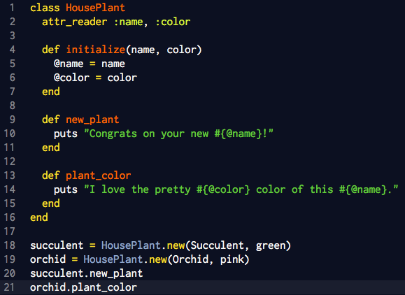

Ruby Classes
Objects & Instances
Ruby allows you to create your own objects by using a class method that organizes your code into categorized areas. Classes correspond to real-world objects and creating classes for your objects will allow you to create complex behaviors by just using simple statements. Once you create an object it will carry around with it its class code.
So what does "real-world" really mean? Well, when you create your object you can assign it different attributes and behaviors. Consider the example below where we create a class for diffent house plants:

First, we define the class called HousePlants. When defining classes they must always start with a capital letter and it's best practice to capitalize the second word. Do not use underscores. We use an attr_reader to define the name and color. This is the same as definining a method for name and color, it is basically a shortcut and makes your code more readable. Next, we initialize the attributes to take in two arguments and assign those aruments into instance variables. Instance variables start with an @ sign and allow us to pass them throughout the entire class, not just in the local method.
We have created two methods within the HousePlant class. One that congratulates the user on the purchase of a new plant and one that complments the color of the plant. We use interpolation to print the name or color inside the string sentence.
To add new plants we have to create instances of the class. First, we have to set it to a variable such as succulent for a new succulent plant and equal it to class name .new and pass in the two arguments in parentheses. To call a particular method you can now call the variable[period]method_name. This will execute the method on the new instance!